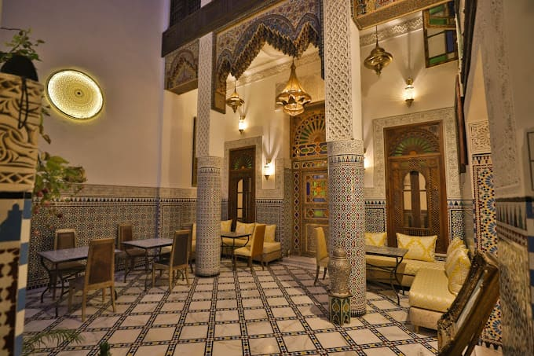
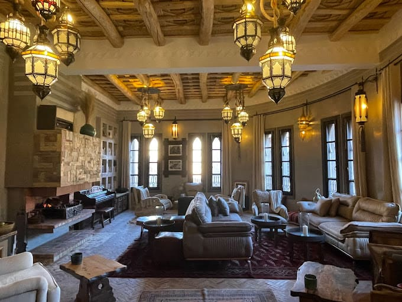

The short answer: A private, chauffeur-driven Morocco tour with us costs from €553 per person for a 2-day Sahara trip to about €3,365 for a 15-day grand circuit, based on two people sharing a room. Most first-time visitors choose 7–10 days, which costs roughly €1,260–€2,045 per person. That's about €180–€240 per person per day, and it includes your own vehicle and driver-guide, accommodation, daily breakfast, the desert camp and camel trek, and many dinners.
“How much will it cost?” is usually the first question travelers ask us, and it's also the hardest to answer from most tour websites. Many operators only give prices after an enquiry. Others quote a cheap headline figure that turns out to cover a shared minibus and a basic camp. So here are our real published prices, how they're worked out, and what makes them go up or down.
All figures below come from our current Signature Journeys as published in September 2026. They are per person, in euros, for two travelers sharing a double or twin room.
What a Private Morocco Tour Costs, by Trip Length
| Length | Example journey | Price pp, 2 sharing | Per day |
|---|---|---|---|
| 2 days | Fes to Merzouga Sahara Express | €553 | ~€277 |
| 3 days | Marrakech to Merzouga Sahara | €644 | ~€215 |
| 4 days | Atlas Mountains & Sahara from Marrakech | €748 | ~€187 |
| 5 days | Marrakech to Erg Chigaga | €1,036 | ~€207 |
| 7 days | Grand Sahara Tour from Marrakech | €1,260 | ~€180 |
| 8 days | Imperial Cities & Sahara from Casablanca | €1,732 | ~€217 |
| 10 days | Ultimate Desert Journey from Marrakech | €2,045 | ~€205 |
| 12 days | Grand Circuit: Desert & Coast from Marrakech | €2,535 | ~€211 |
| 15 days | Imperial Cities, Chefchaouen & Sahara | €3,363 | ~€224 |
Per-day figures are rounded. Each tour page lists the full single, double, triple and quadruple prices.
Two patterns are worth noticing. Very short trips cost more per day, because the vehicle still has to drive out to the desert and back however few nights you stay. And trips that include imperial cities cost a little more per day than desert-focused ones, because they add local guides in the medinas and more nights in riads.
Why Group Size Changes the Price So Much
On a private tour the biggest single cost is the vehicle and your driver-guide, and that cost is the same whether one person or four are on board. Every extra traveler shares it. Here's how that works on our 7-day Grand Sahara tour:
| Room occupancy | Price per person | Compared with a couple |
|---|---|---|
| Single room (solo traveler) | €2,248 | +78% |
| Double / twin (2 sharing) | €1,260 | — |
| Triple (3 sharing) | €991 | −21% |
| Quadruple (4 sharing) | €802 | −36% |
So a family of four, or two couples traveling together, pays about a third less each than a couple would. Solo travelers pay the most, because the vehicle, driver and room aren't shared with anyone. Even so, many solo travelers choose private travel for the flexibility and peace of mind.
What's Included in the Price, and What Isn't
Before comparing quotes, check what each price actually covers. Our Signature Journeys include:
- Your own private driver-guide and air-conditioned vehicle for the whole trip, with no other passengers
- Pickup and drop-off at your hotel, riad or the airport
- Accommodation in riads, kasbah-style hotels and a desert camp, as described on each itinerary
- Daily breakfast, plus dinners where listed, including every night at the desert camp
- The camel trek and your night (or nights) in the Sahara
- Guided sightseeing with local expert guides in Fes and Marrakech, on journeys that include the imperial cities
- Entrance fees to the sites named in the itinerary, and local taxes
Not included: international flights, most lunches, travel insurance, tips and personal spending, and optional extras such as a hot-air balloon flight or a cooking class.

Five Things That Change the Cost
1. How many of you are traveling
As shown above, this makes the biggest difference. Three or four people sharing one vehicle bring the per-person cost down sharply.
2. The level of accommodation
Our published prices use carefully chosen riads, kasbah-style hotels and comfortable desert camps. You can upgrade any night. The most popular upgrades are a boutique hotel in the Dades Valley and a luxury desert camp in Merzouga, with private tents, proper beds and en-suite bathrooms. Upgrades add to the price, but they're often the part of the trip people remember most.

3. When you travel
The Christmas and New Year fortnight and the Easter holidays are the busiest times of year. Desert camps and riads fill up early and some charge peak rates. Spring (March–May) and autumn (late September–November) have the best weather and are also in high demand. Mid-January to mid-February and early summer are usually the easiest times to find availability. For more on the seasons, see our guide to Morocco in winter.
4. Trip length and route
Longer trips cost more in total but often less per day. Adding a day in the middle of a route, such as a full day in the dunes instead of a quick overnight, is usually better value than it looks, because the vehicle is already there.
5. Extra experiences
Hot-air balloon flights over the Marrakech palm groves, cooking classes, hammam visits, private dinners and extra nights in Essaouira or Chefchaouen can all be added. Each one is priced separately, so you only pay for what you actually want.
Private vs. Shared Tours: What You're Actually Paying For
Shared 3-day Sahara tours from Marrakech are sold for a fraction of the price of a private trip, sometimes under €150. It's a genuinely different product, and it's worth knowing what the difference is:
| Private tour | Typical shared tour | |
|---|---|---|
| Vehicle | Just your party, in an air-conditioned 4x4 or van | A minibus shared with a dozen or more strangers |
| Schedule | You decide when to leave, stop and move on | Fixed departure times and stops |
| Stops | Where you want to stop, including photo stops | Set stops, often including commission shops |
| Accommodation | Chosen riads and hotels, with upgrades available | Budget hotels, large group camps |
| Guide | A driver-guide who talks with you all the way | A driver focused on the road and the timetable |
| Route | Can be changed, lengthened or combined with other cities | The same route for everyone |
If your budget is tight and you're happy to go with the flow, a shared tour will still get you to the dunes. If you're traveling as a couple, a family or with older relatives, or this is a once-in-a-lifetime trip, most people find private travel worth the difference.
Budgeting for the Extras
- Lunches: usually taken in small restaurants along the route, and generally inexpensive by European standards.
- Tips: tipping is customary in Morocco. Most travelers tip their driver-guide at the end of the trip, and give smaller amounts to local guides, camel handlers and camp staff. It's always at your discretion.
- Shopping: carpets, ceramics and argan oil are hard to resist. Set yourself a budget before you reach the souks.
- Travel insurance and any visa fees that apply to your nationality. Check the current entry requirements with your government's travel advice before you book.
How to Get the Best Value from a Private Tour
- Travel with friends or family. Three or four people sharing one vehicle is the biggest saving there is.
- Pick the right length. A rushed 3-day trip costs more per day than a 4 or 5-day trip, and you see less. If the desert matters to you, the extra day is worth it.
- Avoid the peak weeks if your dates are flexible, or book them early if they aren't. Late-December desert camps can be full by early autumn.
- Only upgrade where it counts. For many travelers that's the desert camp night. A standard riad in Fes is already a beautiful place to stay.
- Ask for a tailored quote. Our tailor-made trips are priced for your group size, dates and accommodation choices, so you only pay for what you need.
Is a Private Morocco Tour Worth the Money?
For most of our guests, yes. The reason isn't luxury for its own sake. It's that Morocco rewards flexibility. You can stop when a village wedding spills onto the road, add an hour at Ait Benhaddou because the light is perfect, or skip a stop because everyone is tired. You can also ask your guide questions for eight hours a day. None of that happens on a coach.
If you'd like an exact figure for your dates and group, send us a short enquiry. We reply personally within 24 hours with a clear quote, and there's no obligation to book.